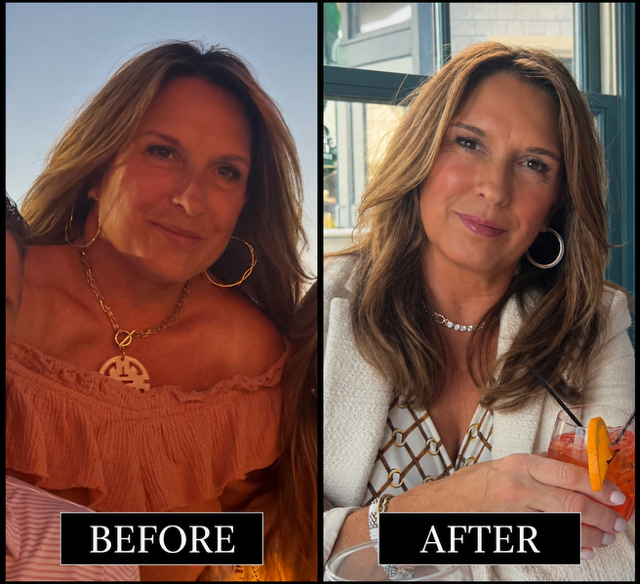
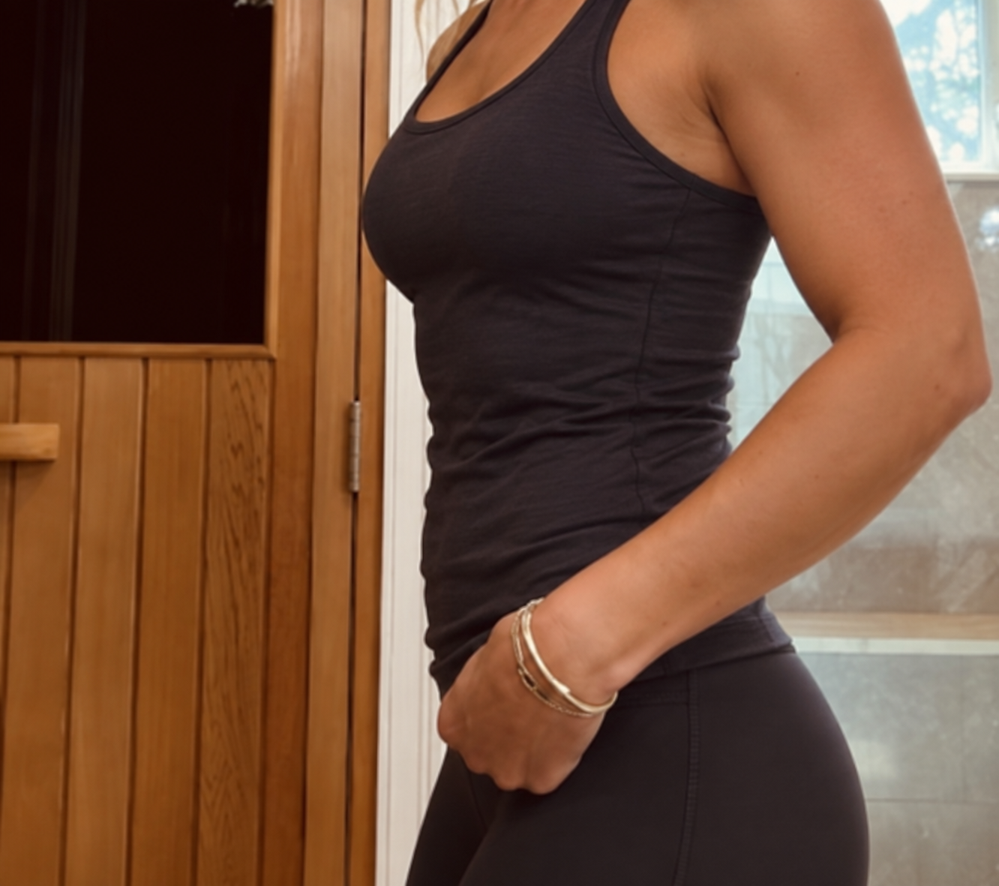

01
Busy parents
Training needs to improve your life without taking it over. The focus is efficient, purposeful work that can fit around family and work demands.
Find your training path
These paths help you identify where to begin without making promises about a specific outcome or timeline.
Real client journeys
Every body, goal, and timeline is different. These client photographs show individual experiences and do not guarantee a specific result.

A personal before-and-after shared with permission.

Individual outcomes depend on many factors and vary by person.

A moment from Caroline's individual fitness journey.
Training needs to improve your life without taking it over. The focus is efficient, purposeful work that can fit around family and work demands.
Structured in-person coaching can create a protected training routine while supporting strength, energy, and physical readiness.
Sports-specific training connects gym work with the physical demands of competition and the athlete's current stage of development.
Physique-focused clients need deliberate exercise selection, progression, intensity, and attention to individual strengths and weaknesses.
A clear starting point removes much of the confusion. Coaching emphasizes fundamentals, confidence, and progress at an appropriate pace.

Your path can change
As ability, priorities, and schedules change, the training approach can change too. The consultation helps identify the most useful place to begin.
Ready for a clearer next step?